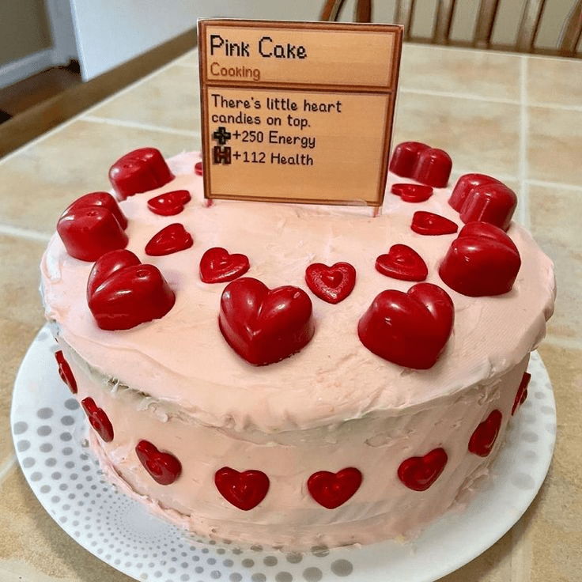

Bolo Rosa

Descrição: Há pequenos bombons de coração por cima.
 Duração 02:00hrs
Duração 02:00hrs  6 Porções
6 Porções
Ingredientes do jogo: Melão, Farinha de Trigo, Ovo, Açúcar
Esta receita restaura 250 de energia e 100 de saúde.
Pode ser obtido na Rainha do Molho e é vendido por 480g.
Ingredientes
Massa do Bolo
- ¾ xícara de manteiga
- 1½ xícara de açúcar branco
- 3 ovos
- 1 colher de chá de baunilha
- 1 xícara de suco de melancia
- 2½ xícaras de farinha de trigo farinha
- 1 colher de chá de fermento em pó
- 1 colher de chá de bicarbonato de sódio
- 1 colher de chá de sal
Cobertura
- ¾ xícara de manteiga
- 3 xícaras de açúcar de confeiteiro
- 1 colher de chá de baunilha
- 3 colheres de sopa de creme de leite ou leite
- 1 gota de corante alimentício vermelho
Bombons de Coração
- 30 gramas de chocolate branco
- 2 gotas de corante alimentício vermelho
Modo de Preparo
- Comece retirando a casca da melancia e fazendo um purê no liquidificador ou pique-a em uma tigela e use um mixer. Usei cerca de um quarto de uma melancia pequena. melancia pequena. Coe o líquido em um copo medidor para remover quaisquer sementes ou pedaços. Ele deve ficar bem vermelho vivo.
- Preaqueça o forno a 200°C. Em uma tigela, bata a manteiga e o açúcar até ficarem fofos e, em seguida, adicione os ovos e a baunilha. Bata até ficar cremoso, depois despeje o suco de melancia e mexa. A aparência será um pouco líquida e não será exatamente bonita.
- Em uma tigela separada, misture a farinha, o fermento em pó, o bicarbonato de sódio e o sal. Adicione tudo de uma vez aos ingredientes úmidos e mexa até ficar homogêneo. A Gema dos ovos misturado com o suco de melancia vermelho resultará em uma cor de pêssego.
- Unte uma fôrma de bolo inglês e polvilhe-a com farinha. Despeje a massa uniformemente na forma e coloque-a no forno por 45 minutos ou até ficar pronta.
- Enquanto estiver assando, prepare a cobertura e os doces de coração. Para a cobertura, bata a manteiga até ficar homogênea e leve, em seguida, adicione o açúcar de confeiteiro, uma xícara por vez. Acrescente a baunilha e o creme de leite, batendo até ficar macio e fofo. A imagem mostra o bolo com uma cor rosa delicada para a cobertura, então coloque apenas uma gota de corante alimentício vermelho.
- Deixe a cobertura de lado e prepare os bombons de coração. Em uma tigela, leve o chocolate branco ao micro-ondas, parando a cada dez segundos para mexer os pedaços de chocolate até ficar homogêneo e sem grumos. Adicione duas gotas de corante alimentício vermelho.
- Transfira o chocolate derretido para um saco de confeitar com uma ponta pequena (usei uma ponta nº 2). Em uma superfície segura para o freezer, como uma assadeira de biscoitos pequena, espalhe um pedaço de papel-manteiga e coloque os formatos de coração. Usei mais chocolate e fiz alguns em vários tamanhos, principalmente para comer os grandes.
- Coloque no freezer por pelo menos 30 minutos. Eles se soltarão facilmente do papel-manteiga quando estiverem prontos.
- Quando o bolo terminar de assar, deixe-o esfriar por 15 minutos antes de removê-lo da forma e, em seguida, coloque-o na geladeira em um prato por mais 20 a 30 minutos. Isso esfriará o bolo e evitará que a cobertura derreta quando for aplicada. Aplique a cobertura, cobrindo todos os lados, e decore a parte superior com os doces de coração.